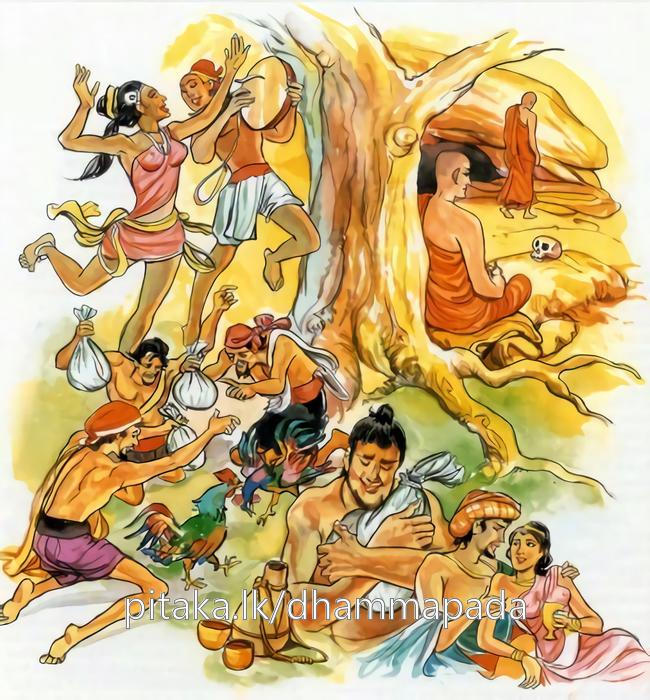
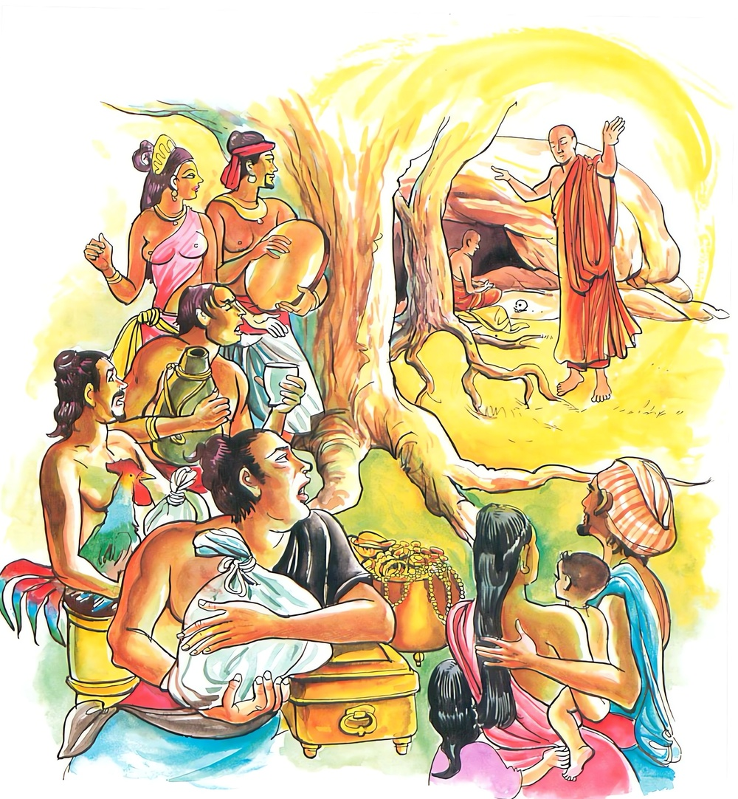

2-4 සතරවන බාලනක්ඛත්තඝෝෂා වස්තුවයි.
මෙම කතාව සද්ධර්ම සාගරයෙන් ද කියවන්න.
පමාදමනුයුඤ්ජන්ති බාලා දුම්මෙධිනො ජනා
අප්පමාදඤ්ච මෙධාවී ධනං සෙට්ඨං’ව රක්ඛති.
දෙලෝ වැඩ නොදන්නා අනුවණ සත්ත්වයෝ ප්රමාදයෙහි යෙදී පවත්නාහ (ප්රමාදයෙන් දවස් යවන්නාහ). නුවණැත්තේ අප්රමාදය (කුලවංශාගත) උතුම් ධනයක් මෙන් රක්නේ ය.

මා පමාදමනුයුඤ්ජෙථ මා කාමරතිසන්ථවං
අප්පමත්තො හි ඣායන්තො පප්පොති විපුලං සුඛං.
ප්රමාදය නහමක් පුරුදු කරන්නේ ය (ප්රමාදයෙහි යෙදී නො වසන්නේ ය). (වස්තුකාම ක්ලේශකාම දෙක්හි රතිය යි කියන ලද) තෘෂ්ණාසංසත්වයෙහි නහමක් යෙදෙන්නේ ය. එළඹ සිටි සිහි ඇති (නොපමා වූ), භාවනා කරන පුද්ගල තෙමේ මහත් නිවන් සුවයට පැමිණෙන්නේ ය.

පමාදමනුයුඤ්ජන්ති ආදි මේ ධර්මදේශනාව ශාස්තෘන්වහන්සේ ජේතවනයෙහි වාසය කරන කාලයෙහි බාලක්ඛත්තය අරභයා දේශනා කළ සේක. එක් සමයක සැවැත්නුවර බාලනක්ඛත්ත නම් උත්සවයක් විය. ඒ නැකත්කෙළියෙහි දී බාලමෝඩ මනිස්සු අළු සහ ගොම ශරීරයෙහි ගාගෙන සත්දිනක් අසභ්ය කුණුකථා කියමින් හැසිරෙත්. එහිදී නෑමිතුරන් හෝ පැවිද්දන් හෝ දැක ලජ්ජාවන්නෙක් නැත. දොරක් පාසා සිට අසභ්ය වචන කියති. මිනිස්සු ඔවුන්ගේ නොසැබි තෙපුල් අසනු නොහැකිව ශක්ති පමණින් කහවණුවකින් අඩක් හෝ පාදයක් (කහවණුවකින් හතරෙන් තුනක්) හෝ කහවණුවක් හෝ ඔවුන් වෙත යවති.
ඔවුහු නැකත්කෙළි අවසන අටවෙනි දිනයෙහි බුද්ධප්රමුඛ භික්ෂුසංඝයාට ආරාධනා කොට නුවරට වැඩමවා මහදන් දී එකත්පසෙක හිඳ, ස්වාමීනි, අපි මහත් දුකෙන් මේ සත්දිනය ගෙවූයෙමු. බාලයන්ගේ නොසැබි වචන අසන අයගේ කන් පැලී යන්නාක් මෙන් වෙයි. කිසිවෙක් කවුරුන් ගැන හෝ ලජ්ජා නොවෙති. එහෙයින් අපි නුඹවහන්සේලාට ඇතුළු නගරයට පිවිසීමට නුදුම්හ. අපිත් ගෙවල්වලින් පිටතට නොපැමිණියෙමුයි කීවාහුය.
ශාස්තෘන්වහන්සේ ඔවුන්ගේ කථාව අසා බාලඅඥානයන්ගේ ක්රියා මෙසේමයි, නුවණැත්තෝ වටිනා ධනසාරයක් මෙන් අප්රමාද ප්රතිපදාව රැක අමාමහ නිවන් සැපතට පැමිණෙතියි වදාරා මේ ගාථා ප්රකාශ කළසේක.
අනුවණ බාල ජනයෝ පමාවෙහි ම නියැළෙති
නුවණැත්තා ධනය මෙන් නොපමා බවම සුරකී
පමාවෙහි නොඇළනු කම්සැපතෙහි ද නොයෙදෙනු
නොපමාව දැහැන් වඩනා අය මහත් සැපයට පත්වෙති
එහි බාලා යනු බාල බැවින් යුක්ත වූ මෙලෝ පරලෝ අර්ථය නොදන්නෝයි. දුම්මෙධිනො යනු ප්රඥාව නැත්තෝයි. ප්රමාදයෙහි ආදීනව නොදන්නා ඔවුහු ප්රමාදයෙහිම යෙදෙත්. ප්රමාද වෙමින්ම කාලය ගෙවත්. මෙධාවී යනු ධර්මය හරය කොටගත් ප්රඥාවෙන් යුක්ත වූ නුවණැත්තා ස්වකීය කුලපරපුරෙන් උරුමවූ ශ්රේෂ්ඨවූ උතුම්වූ සප්තරත්න ධනනිධානයක් මෙන් අප්රමාද ප්රතිපදාව රකිති. කෙසේද යත්? මේ උතුම් ධනයෙන් කාම ගුණ සැපතට පැමිණෙන්නෙමු. දූදරුවන් පෝෂණය කරම්හ. පරලොව ගමන්මගද පිරිසිදු කරගන්නෙමු. ආදි විසින් දැක එය රැකගන්නාහුය. මේ අයුරින් අප්රමාදී නුවණැත්තා ප්රථමාදිධ්යාන ලැබගන්නෙමි, මාර්ගඵලාදියට පැමිණෙමි, ත්රිවිද්යා-ෂට්අභිඥා සම්පාදනය කරගන්නෙමියි අප්රමාදයෙහි ආනිසංස දකිමින් ශ්රේෂ්ඨ වූ ධනයක මෙන් අප්රමාදය රැක ගනී යනු අර්ථයයි.
මා පමාදං යනු ඉහත කී කරුණු නිසා තෙපි ප්රමාදයෙහි නොයෙදෙව්. ප්රමාදයෙහි ඇළී ගැලී කාලය ගත නොකරම් යනු අර්ථයි. කාමරතිසන්ථවං යනු වස්තුකාමක්ලෙශකාමයන්හි ඇළීම් සංඛ්යාත තෘෂ්ණාව හා එක්වීමෙහි නොයෙදෙව්, ඒ ගැන නොසිතව්, ඒ ලබාගැනීමට උත්සාහ නොදරව් යනු අර්ථයි. අප්පමත්තා හි යනු එළඹ සිටි සිහියෙන් යුක්තවූ හෙයින් අප්රමාදව සිටින පුද්ගලයා විපුලවු උදාරවූ නිවන් සැපතට පැමිණෙන්නේය.
ගාථා කෙළවර බොහෝ අය සෝවාන් ආදි ඵලයන්ට පැමිණියහ. මහාජනයාටද ධර්මදේශනාව සාර්ථක විය.